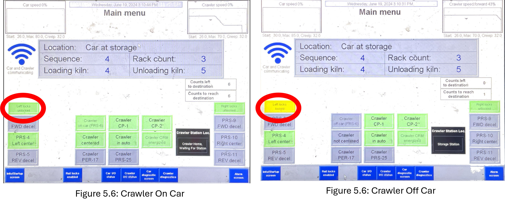
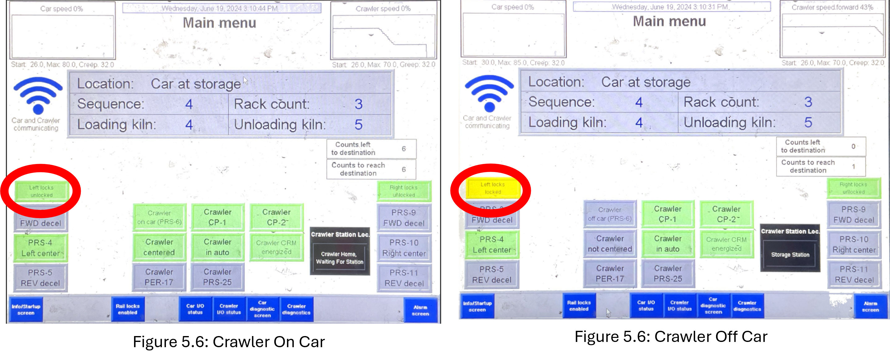

Wait until the crawler has loaded its first rack onto the new loading bay and has just retrieved its unloading rack (Figure 5.1). Flip the car control switch to the “Hand” position (Green circle in Figure 5.2).
Use the lever on the second row to move the car to the “reverse” position (Red circle in Figure 5.3). You can press the “Manual Accel” button (Pink circle in Figure 5.3) to speed the car up.
hold the “Reverse” lever from step 5.2 until the “Car Centered Left” button lights up (Figure 5.4).
Flip the “Left Raillocks” switch to the “Lock” position (purple arrow in Figure 5.5) and hold it at that position until you see the “Left Locks Locked” box (red circles in Figure 5.6).
Figure 5.7 is what the loading bay should now look like.
Once the crawler comes back to the car, unlock the raillocks (purple circle in Figure 5.8), and move the car forward back to the unloading bay. Lock the left raillocks again, making the crawler unload the next rack.
Once the crawler collects this rack and safely returns to the car, move the car out of the kiln room to the auxillary railway from the door (Red circle in Figure 5.9).
Before you unlock the rail, flip the “Manual Crawler Auto” switch to the “Crawler” position (Red circle in Figure 5.10).
Instead of locking the left raillocks, you would want to lock the right raillocks this time (Purple circle in Figure 5.11). Please be careful in ensuring you are locking the correct side as this can result in the crawler derailing off the car.
At this time, move and hold the “Crawler” lever to the “Right” position (Red circle in Figure 5.12) until the entire rack is on the storage railway.
Move and hold the “Crawler Elevator” lever to the “Down” position (Red circle in Figure 5.13) until the rack is independently sitting on the rail.
Move the crawler back into the car. Hold the lever until you see the “Crawler on Car” label light up (Red circles in Figure 5.14).
Move the car back into the kiln room to pick up the fully unloading racks.
Move this rack out of the kiln room but this time, drop it off on the loading rail. No need to manually move the crawler this time.
To reduce down-time, collect the loading product and put it in the same bay where all the other loading products have been placed.
Once that rack has been dropped off, collect the last solid unloading product and put it on the loader rail similarly to step 5.14 (Red circle in Figure 5.18).
Pick up the mixed rack from the storage rail and place it on the Unloading rail.
While the crawler is dropping off the final rack, go to the “Program Car” page (Red circle in Figure 5.20).
While the crawler is dropping off the final rack, go to the “Program Car” page (Red circle in Figure 3.21).
Press on the blue box to the right of the “Location” label until the box says, “Car at Loader” (Yellow circle in Figure 3.22).
Flip the control switch back to “Auto” and press the “Auto Pump Start” button (Purple circle in Figure 3.23).


 
